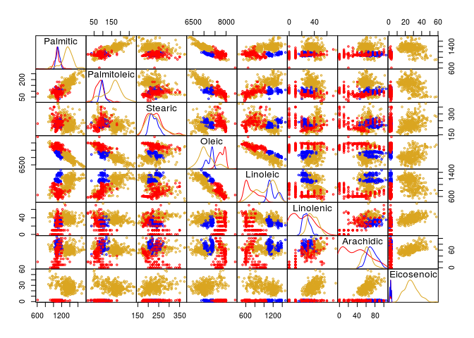

library(pgmm) ## for olives data
library(skimr) ## for text-based summaries
library(ggplot2); theme_set(theme_bw())
library(GGally) ## pairs plots etc.
library(corrplot) ## correlation plots
library(dplyr) ## data manipulation
library(readr) ## read CSV files
library(agridat) ## agricultural data sets
data(olive,package="pgmm")
data(fisher.barley,package="agridat")Hints on looking for stuff:
library("sos")
findFn("barley") ## full-text search of CRAN
?RSiteSearch ## similar
help.search("barley",agrep=FALSE) ## search in *installed* packageOrder data and factor-ize year:
ff <- (fisher.barley
%>% mutate(gen=reorder(gen,yield),
env=reorder(env,yield),
year=factor(year))
%>% arrange(gen,env)
)
gg0 <- (ggplot(ff,
aes(x=env,y=yield,colour=year,group=year))
## geom_boxplot(aes(x=gen,y=yield,fill=factor(year)))
+ geom_point()+geom_line()
+ facet_wrap(~gen,nrow=1) ## 1-row layout
)
print(gg0)Hard to see x-axis labels: try rotating? coord_flip() doesn't interact well with faceting (see also ggstance)
gg0_h <- (ggplot(ff,
aes(y=env,x=yield,colour=year,group=year))
## geom_boxplot(aes(x=gen,y=yield,fill=factor(year)))
+ geom_point()
+ geom_path()
+ facet_wrap(~gen,nrow=1)
+ theme(panel.spacing=grid::unit(0,"lines"))
+ coord_fixed(ratio=20)
)
print(gg0_h)maybe use ncol=1, coord_fixed(ratio=1/20)? Then yields would be aligned along the same axis (but a tall skinny plot might not be convenient)
Could calculate differences ...
## restore names to data set
olive_regions <-
read_csv("data/olive_regions.csv")
olive2 <-
(full_join(olive_regions,olive,
by=c("region_num" = "Region",
"area_num" = "Area"))
%>% select(-c(region_num,area_num))
%>% mutate_at(c("region","area"),factor)
)
colvec <- c("red","blue","goldenrod")First a pairs plot in base R
## define a function for panel density
panel.density <- function(x, ...)
{
usr <- par("usr"); on.exit(par(usr))
par(usr = c(usr[1:2], 0, 1.5) ) ## modify y limits
h <- lapply(split(x,olive2$region),density)
for (i in 1:length(h)) {
lines(h[[i]]$x,h[[i]]$y/max(h[[i]]$y),col=colvec[i])
}
}
num_cols <- 3:ncol(olive2)
pairs(olive2[,num_cols],
gap=0, ## no spaces
cex=0.5, ## smaller points
col=colvec[olive2$region],
diag.panel=panel.density) This took significant hacking to get the way I wanted it! haven't adjusted the panels above the diagonal, yet ...
## https://stackoverflow.com/questions/37889222/change-colors-in-ggpairs-now-that-params-is-deprecated
ggp1 <- ggpairs(olive2,
lower=list(continuous= function(data,mapping,...) {
(ggally_points(data,mapping,..., size=1)
+ scale_colour_brewer(palette="Dark2")
)
}),
diag = list(continuous=function(data,mapping,...) {
(ggplot(data,mapping)
+ geom_density(...)
+ scale_colour_brewer(palette="Dark2")
)
}),
upper = list(continuous=function(data,mapping, ...) {
(ggally_cor(data,mapping,...)
+ scale_colour_brewer(palette="Dark2")
)
}),
columns=num_cols,
mapping=aes(colour=region))
## https://github.com/ggobi/ggally/issues/14
theme_set(theme_bw()+ theme(panel.spacing=grid::unit(0,"lines")))
print(ggp1)car::scatterplotMatrix(olive2[,num_cols],
groups=olive2$region,
gap=0)
What about just showing correlations? (Probably not "exploratory".)
library(corrplot)
corrplot(cor(olive2[,num_cols]),method="ellipse")corrplot.mixed(cor(olive2[,num_cols]),lower="number",upper="ellipse")